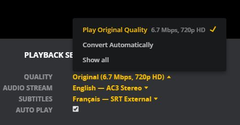
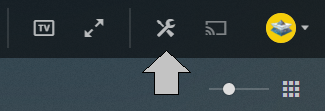
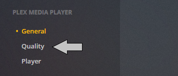
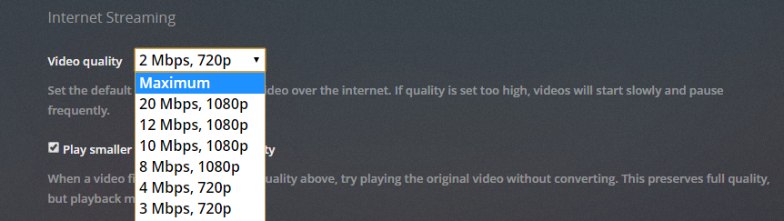
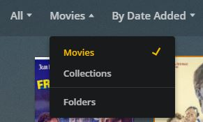

Pour utiliser Plex correctement, il est nécessaire de respecter les quelques règles et techniques suivantes.
Il est possible d'utiliser Plex dans un navigateur web, mais ils ne supportent pas suffisament de codecs audio/vidéo. C'est pourquoi il est nécessaire d'installer un logiciel, Plex Media Player, disponible sur PC et Mac.
Attention à bien sélectionner "Application et appareils" et à télécharger Plex Media Player et non pas Plex Media Server.
Le seul cas d'utilisation possible de plex dans un nvaiguateur est pour l'écoute de musique. 🎵
🐧Application pour les utilisateurs de Linux
Il est également important de vérifier, lorsque vous lisez un média, que la lecture est bien en mode : "Qualitée originale". Cela évite au serveur de ré-encoder les médias, réduisant ainsi sa charge de travail tout en ayant la meilleure qualitée possible.
Pour régler se parametre par défault, rendez vous dans l'onglet paramètre en haut à droite
Sélectionnez ensuite Quality
 Vous pouvez maintenant ajuster le réglage Video Quality à "Maximum"
N'hésitez pas à retourner vérifier que ce paramètre est bien modifié, surtout après les mises à jour du lecteur.
La navigation dans plex est plutôt évidente, cependant, certaines fonctions ne sont pas très claires.
Il est par exemple possible d'accèder à des playlists, en sélectionnant en haut à gauche la catégorie "Collections"
Si vous ne savez pas quoi regarder, c'est l'idéal. 🦕
La bibliothèque Club1 n'est pas ouverte, vous ne pouvez pas participer en ajoutant directement des fichiers. Il est cependant possible de proposer des sélections de films, ou d'ajouter une bibliothèque indépendante que vous aurez à gèrer. La gestion pourrait également être ouverte à l'avenir, notamment pour l'ajout des sous-titres.
Si vous pensez avoir une bibliothèque intéressante que vous avez envie de partager, n'hésitez pas à nous contacter par E-mail
Pour toutes questions, n'hésitez pas à nous contacter à cette adresse :
plex.club1@gmail.comUne news-letter est envoyé à toutes les personnes inscrites environ une fois par mois.
N'hésitez pas à demander des films ou musiques par email ou à proposer des sélections qui seront ajoutés aux playlists